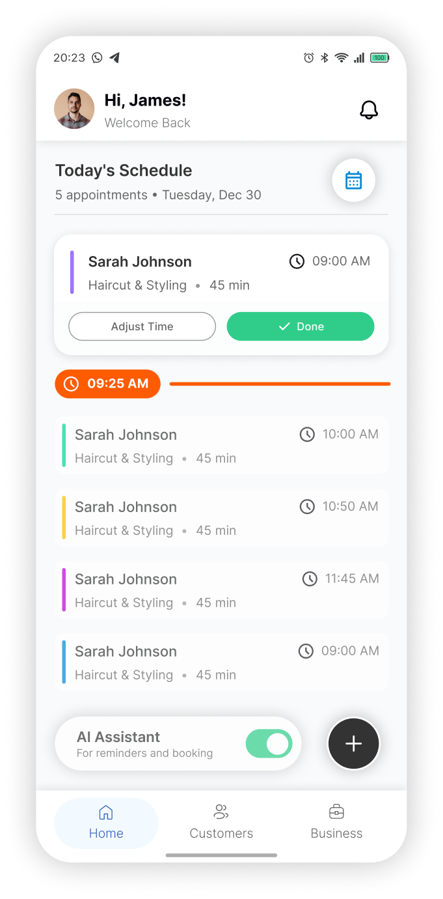
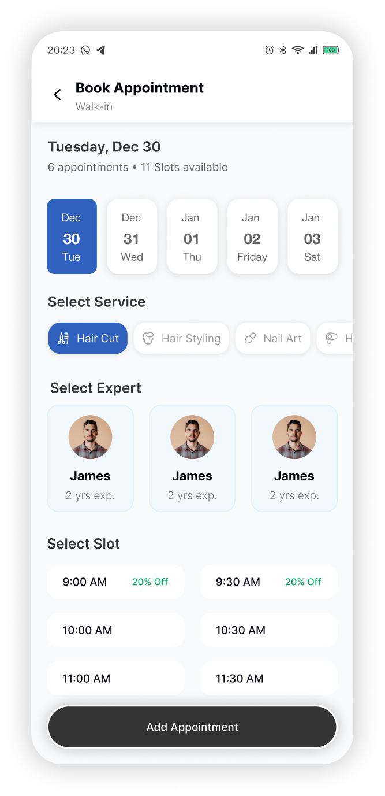
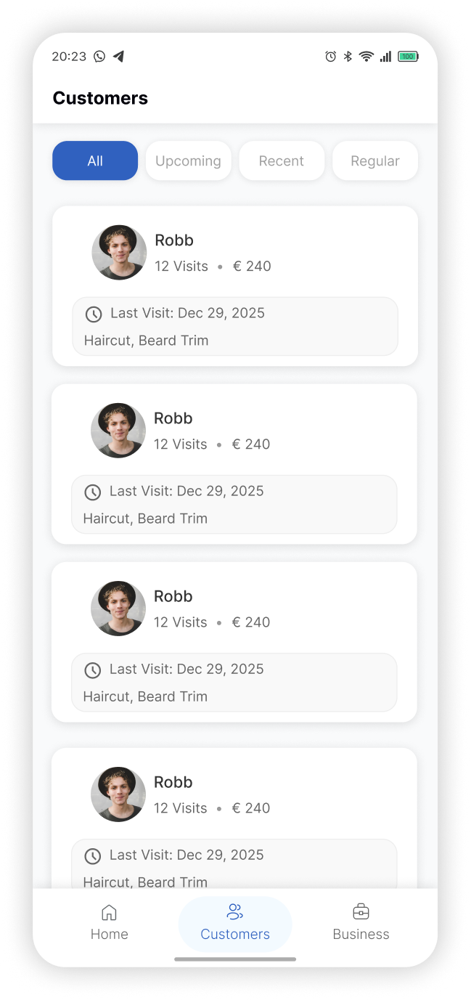
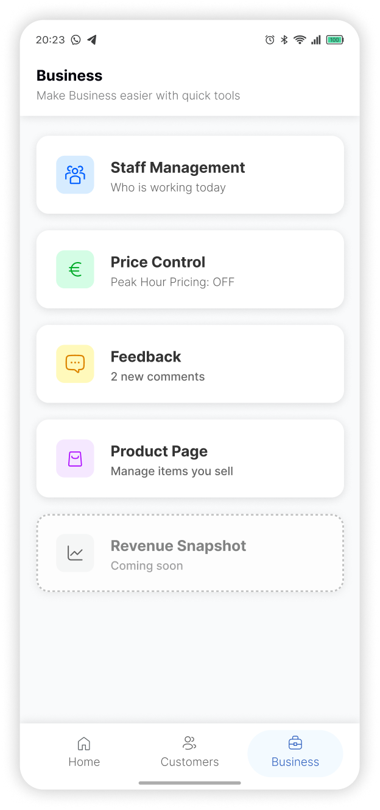
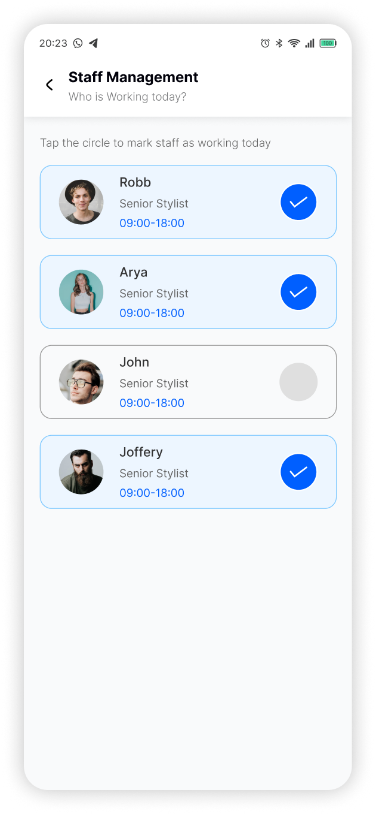
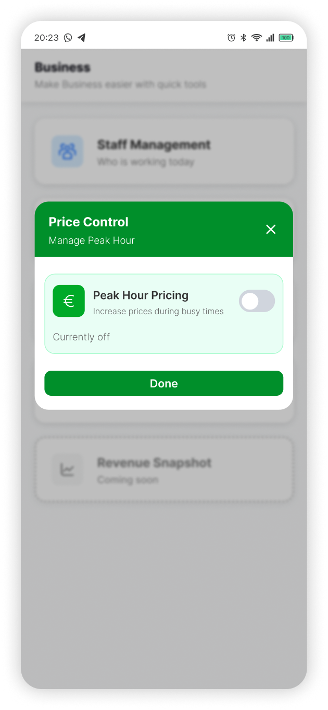
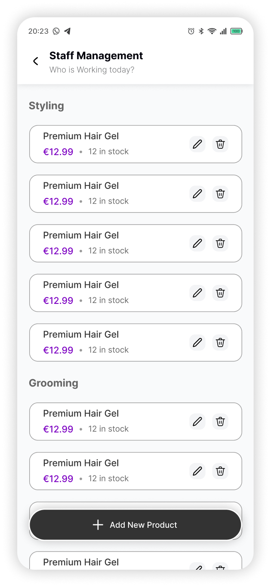
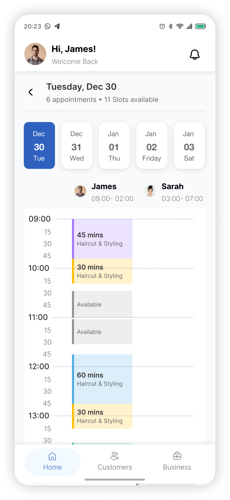

From user interviews and card sorting to a full design system and usability tested screens — a 5-day end-to-end UX process for a salon management tool.
Assignment
Experience Design & Human Interaction
Duration
5 Days
Role
UX Designer
Tools
Figma · Think-Aloud Testing
Overview
A booking app built for real salons
This was the final exam for Experience Design & Human Interaction. The brief: design a digital product from scratch within 5 days — research, structure, design, and test. I chose a salon management and booking app after noticing how fragmented most salon tools are. The full process went from brainstorming, through 6 user interviews, card sorting, IA mapping, a design system, high-fidelity screens, and finished with a usability test.
UX Research
User Interviews
Card Sorting
Information Architecture
Interaction Design
Usability Testing
Figma
AI-assisted Design
Phase 01 — Discovery
Starting with a mind map
Before any interviews, I mapped out every possible feature a salon booking app could have — no filtering, no prioritisation, just everything. This helped me go into research with breadth rather than assumptions.
AI Client Manager
Smart Scheduling
Book Slots
Staff Management
Buffer Time
Push Notifications
Price Control
Revenue Insights
Client Profiles
Walk-in Booking
Products Inventory
Calendar View
Business Analytics
Repeat Customers
Phase 02 — Research
6 interviews, 6 perspectives
I interviewed salon owners and staff across different contexts — luxury, city centre, barbershop, trend boutique, and international. Each conversation followed the same structure: context, goals, pain points, and required features.
Losing track of what style a client had last visit, no link between product sales and client records.
Required Functions
Style HistoryProduct TrackingNotifications
Roberto
International Salon Chain · Multi-location
INT 05
User Goals
Consistent experience across locations, centralised staff management, business-level revenue visibility.
Pain Points
Scattered data across multiple tools, no single dashboard for performance, onboarding new staff is slow.
Required Functions
Revenue DashboardStaff OnboardingMulti-location
Anna
Independent Stylist · Solo operator
INT 06
User Goals
Self-manage all bookings without admin overhead, send automated reminders, track income easily.
Pain Points
No-shows, forgetting to send reminders, no clean way to view weekly revenue at a glance.
Required Functions
Auto RemindersIncome TrackingNo-show Management
Phase 03 — Structure
Card sorting into 4 clusters
After interviews, I did open card sorting on all feature ideas to find natural groupings. The 4 categories that emerged informed both the navigation structure and the IA hierarchy.
Category 01
Appointment Scheduling & Availability
Book SlotsCalendar ViewBuffer TimeWalk-in QueueStaff AvailabilityReschedule
Category 02
AI Assistant & Smart Automation
AI Client ManagerSmart SuggestionsAuto RemindersNo-show PredictionRebooking AI
The card sort results became a handwritten IA before going into Figma. Three top-level tabs — Home, Customers, Business — each with clear sub-sections that match how salons actually think about their work.
Before touching screens, I established the visual language — typeface, colours, and mood. I pulled references from Dribbble and Behance, and used Figma AI to explore directions, then converged on a clean, professional feel with enough warmth for a people-centric business.
TYPOGRAPHY
Inter throughout
Single typeface, variable weight. Clean, legible at small sizes — critical for a scheduling UI with dense information.
COLOR
Dark base, green accent
Deep navy-green background creates a premium, focused feel. Green accent signals actions, availability, and positive states.
INSPIRATION
Dribbble + Figma AI
Mood references from Dribbble and Behance, refined with Figma AI prompts to test visual directions before committing to a direction.
Phase 06 — Design
High-fidelity screens
The design covers the full core flow — from the moment a salon owner opens the app in the morning to the end-of-day business view.

Home

Screen 2

Screen 3

Screen 4

Screen 5

Screen 6

Screen 7

Screen 8
Phase 07 — Testing
Think-aloud with a real user
I ran one in-person usability test using think-aloud protocol with Rohit Kumar, a participant unfamiliar with salon management tools. The session covered 6 core tasks, each reflecting a real daily action a salon owner would take.
T1
Open today's schedule and identify which stylist has the most appointments this morning.
T2
Book a walk-in appointment for a new client wanting a haircut with any available stylist in the next 30 minutes.
T3
Find a returning client named "Sara" and view her last visit notes and style history.
T4
Update the price for a haircut service from the Business tab.
T5
Check this week's revenue broken down by service type.
T6
Edit a staff member's schedule to mark them unavailable on Friday afternoon.
What worked well
Today's schedule was immediately understood — "I can see exactly what's happening today."
Walk-in booking flow was completed without hesitation — the shortcut on home screen was noticed quickly.
Client profile page felt comprehensive — all relevant info in one place without feeling overwhelming.
Minor confusions
Revenue section wasn't found immediately — user expected it under Home rather than Business tab.
The price control modal's save action wasn't obvious — participant looked for a floating "Save" button.
Staff schedule edit required one extra tap — participant expected to edit directly from the staff card.
UI improvements identified
Add a Revenue shortcut or summary widget to the Home dashboard so it's accessible without navigating to Business.
Make the price save action a sticky bottom bar inside the modal rather than a standard inline button.
Inline edit on staff cards — tap the availability chip to toggle availability directly without going deeper.
Key Learnings
What I took away
01
Research reveals hidden simplicity. The mind map started with 20+ features. Six interviews cut it to a focused set. Users don't want everything — they want the five things they do every day to feel effortless.
02
Card sorting is faster than IA debates. Instead of deciding what goes where based on assumptions, letting real feature names group themselves revealed an IA that matched how salon owners actually talk about their work.
03
One test is infinitely more valuable than zero. Even a single think-aloud session with one participant caught three genuine friction points that weren't visible during design. Testing always humbles you.
04
Navigation placement shapes mental models. The Revenue section confusion showed that users build expectations from the first screen. High-value data should live where users look first — not where it "logically belongs."